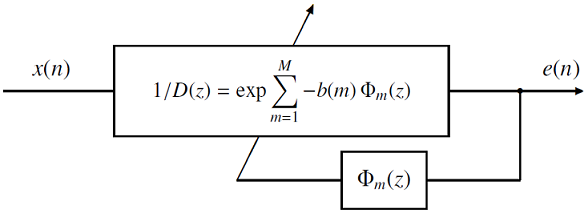
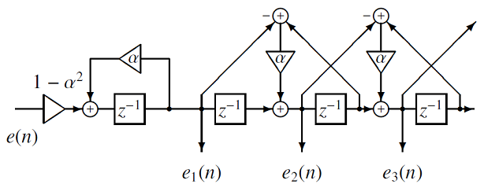
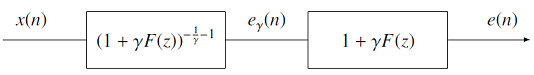

amgcep¶
Functions
-
int main(int argc, char *argv[])
amgcep [ option ] [ infile ]
-m int
order of mel-cepstral coefficients \((0 \le M)\)
-a double
all-pass constant \((|\alpha| < 1)\)
-c int
gamma \(\gamma = -1 / C\) \((1 \le C)\)
-e double
minimum epsilon \((0 < \epsilon_{min})\)
-t double
momentum \((0 \le \tau < 1)\)
-l double
forgetting factor \((0 \le \lambda < 1)\)
-k double
step-size factor \((0 < a < 1)\)
-p int
output period \((1 \le p)\)
-P int
order of Pade approximation \((4 \le P \le 7)\)
-E str
double-type prediction errors
infile str
double-type input signals
stdout
double-type mel-generalized cepstral coefficients
The below example extracts 15-th order mel-cepstral coefficients for every block of 100 samples.
amgcep -m 15 -p 100 < data.raw > data.mcep
The smoothed mel-cepstral coefficients can be computed as
amgcep -m 15 -p 1 < data.raw | vstat -m 15 -t 100 -o 1 > data.mcep
15-th order generalized cepstral coefficients can be obtained as
amgcep -m 15 -c 1 -a 0 < data.raw > data.gcep
- Parameters
argc – [in] Number of arguments.
argv – [in] Argument vector.
- Returns
0 on success, 1 on failure.
-
class sptk::AdaptiveMelCepstralAnalysis¶
Perform adaptive mel-cesptral analysis.
The block diagram of the adaptive mel-cepstral analysis is shown as below: 
where \(x(n)\) is an input signal and \(e(n)\) is the output of the inverse filter \(1/D(z)\). The \(D(z)\) is implemented as a MLSA filter. The coefficients of the MLSA filter \(\boldsymbol{b}\) is updated every sample as
\[ \boldsymbol{b}^{(n+1)} = \boldsymbol{b}^{(n)} - \mu^{(n)} \bar{\nabla} \epsilon^{(n)} \]where\[\begin{split}\begin{eqnarray} \mu^{(n)} &=& \frac{a}{M \epsilon^{(n)}}, \\ \epsilon^{(n)} &=& \lambda \epsilon^{(n-1)} + (1-\lambda) e^2(n), \end{eqnarray}\end{split}\]and \(a\) is the step-size factor and \(\lambda\) is the forgetting factor. If \(\epsilon^{(n)}\) is less than \(\epsilon_{min}\), \(\epsilon^{(n)}\) is set to \(\epsilon_{min}\). The estimate of \(\nabla \epsilon\) is\[ \bar{\nabla} \epsilon^{(n)} = \tau \bar{\nabla} \epsilon^{(n-1)} -2 (1-\tau) e(n) \boldsymbol{e}^{(n)}_{\Phi} \]where \(\tau\) is the moment and \(\boldsymbol{e}^{(n)}_{\Phi}=[e_1(n),e_2(n),\ldots,e_M(n)]^{\mathsf{T}}\) is the set of outputs of the filter \(\Phi_m(z)\): The coefficients of the MLSA filter are converted to the mel-cepstral coefficients by a linear transformation.
Public Functions
-
AdaptiveMelCepstralAnalysis(int num_order, int num_pade_order, double alpha, double min_epsilon, double momentum, double forgetting_factor, double step_size_factor)¶
- Parameters
num_order – [in] Order of mel-cepstral coefficients, \(M\).
num_pade_order – [in] Order of Pade approximation.
alpha – [in] Frequency warping factor, \(\alpha\).
min_epsilon – [in] Minimum value of \(\epsilon\).
momentum – [in] Momentum, \(\tau\).
forgetting_factor – [in] Forgetting factor, \(\lambda\).
step_size_factor – [in] Step-size factor, \(a\).
-
inline int GetNumOrder() const¶
- Returns
Order of mel-cepstral coefficients.
-
inline int GetNumPadeOrder() const¶
- Returns
Order of Pade approximation.
-
inline double GetAlpha() const¶
- Returns
Frequency warping factor.
-
inline double GetMinEpsilon() const¶
- Returns
Minimum epsilon.
-
inline double GetMomentum() const¶
- Returns
Momentum.
-
inline double GetForgettingFactor() const¶
- Returns
Forgetting factor.
-
inline double GetStepSizeFactor() const¶
- Returns
Step-size factor.
-
inline bool IsValid() const¶
- Returns
True if this object is valid.
-
bool Run(double input_signal, double *prediction_error, std::vector<double> *mel_cepstrum, AdaptiveMelCepstralAnalysis::Buffer *buffer) const¶
- Parameters
input_signal – [in] An input signal, \(x(n)\).
prediction_error – [out] A prediction error, \(e(n)\).
mel_cepstrum – [out] \(M\)-th order mel-cepstral coefficients.
buffer – [inout] Buffer.
- Returns
True on success, false on failure.
-
class Buffer¶
Buffer for AdaptiveMelCepstralAnalysis class.
-
AdaptiveMelCepstralAnalysis(int num_order, int num_pade_order, double alpha, double min_epsilon, double momentum, double forgetting_factor, double step_size_factor)¶
-
class sptk::AdaptiveGeneralizedCepstralAnalysis¶
Perform adaptive generalized cesptral analysis.
Let assume \(x(n)\) is an input signal and \(e(n)\) is the output of the inverse filter \((1+F(z))^{-\frac{1}{\gamma}}\). The relationship between \(x(n)\) and \(e(n)\) is shown as below: 
The filter \(F(z)\) is represented as
\[ F(z) = \sum_{m=1}^M c'_\gamma(m) z^{-m}, \]where \(c'_\gamma(m)\) is the normalized generalized cepstral coefficients. The coefficients of the filter \(F(z)\) is updated every sample as\[ \boldsymbol{c}'^{(n+1)}_\gamma = \boldsymbol{c}'^{(n)}_\gamma - \mu^{(n)} \bar{\nabla} \epsilon^{(n)} \]where\[\begin{split}\begin{eqnarray} \mu^{(n)} &=& \frac{a}{M \epsilon^{(n)}}, \\ \epsilon^{(n)} &=& \lambda \epsilon^{(n-1)} + (1-\lambda) e_\gamma^2(n), \end{eqnarray}\end{split}\]and \(a\) is the step-size factor and \(\lambda\) is the forgetting factor. If \(\epsilon^{(n)}\) is less than \(\epsilon_{min}\), \(\epsilon^{(n)}\) is set to \(\epsilon_{min}\). The estimate of \(\nabla \epsilon\) is\[ \bar{\nabla} \epsilon^{(n)} = \tau \bar{\nabla} \epsilon^{(n-1)} -2 (1-\tau) e_\gamma(n) \boldsymbol{e}^{(n)}_{\gamma} \]where \(\tau\) is the moment and \(\boldsymbol{e}^{(n)}_{\gamma} = [e_\gamma(n-1),\ldots,e_\gamma(n-M)]^{\mathsf{T}}\) is the set of outputs of the filter \((1+\gamma F(z))^{-\frac{1}{\gamma}-1}\).The coefficients of the filter \(F(z)\) are denormalized to obtain the generalized cepstral coefficients.
Public Functions
-
AdaptiveGeneralizedCepstralAnalysis(int num_order, int num_stage, double min_epsilon, double momentum, double forgetting_factor, double step_size_factor)¶
- Parameters
num_order – [in] Order of cepstral coefficients, \(M\).
num_stage – [in] Number of stages, \(C\).
min_epsilon – [in] Minimum value of \(\epsilon\).
momentum – [in] Momentum, \(\tau\).
forgetting_factor – [in] Forgetting factor, \(\lambda\).
step_size_factor – [in] Step-size factor, \(a\).
-
inline int GetNumOrder() const¶
- Returns
Order of cepstral coefficients.
-
inline int GetNumStage() const¶
- Returns
Number of stages.
-
inline double GetGamma() const¶
- Returns
Gamma.
-
inline double GetMinEpsilon() const¶
- Returns
Minimum epsilon.
-
inline double GetMomentum() const¶
- Returns
Momentum.
-
inline double GetForgettingFactor() const¶
- Returns
Forgetting factor.
-
inline double GetStepSizeFactor() const¶
- Returns
Step-size factor.
-
inline bool IsValid() const¶
- Returns
True if this object is valid.
-
bool Run(double input_signal, double *prediction_error, std::vector<double> *generalized_cepstrum, AdaptiveGeneralizedCepstralAnalysis::Buffer *buffer) const¶
- Parameters
input_signal – [in] An input signal, \(x(n)\).
prediction_error – [out] A prediction error, \(e(n)\).
generalized_cepstrum – [out] \(M\)-th order generalized cepstral coefficients.
buffer – [inout] Buffer.
- Returns
True on success, false on failure.
-
class Buffer¶
Buffer for AdaptiveGeneralizedCepstralAnalysis class.
-
AdaptiveGeneralizedCepstralAnalysis(int num_order, int num_stage, double min_epsilon, double momentum, double forgetting_factor, double step_size_factor)¶